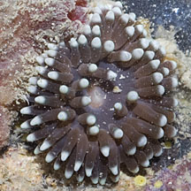
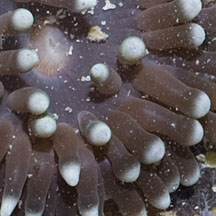
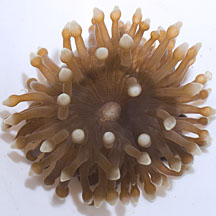
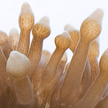
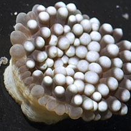
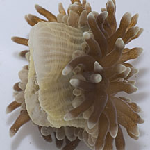
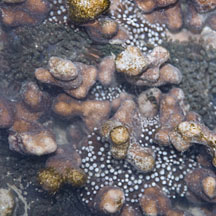

|
|
| corallimorphs text index | photo index |
| Phylum Cnidaria > Class Anthozoa > Subclass Zoantharia/Hexacorallia > Order Corallimorpharia |
| White-tip
corallimorphs Rhodactis indosinensis Family Discosomidae updated Jul 2024 Where seen? This small animal with white bulbous tips on its tentacles is often seen in clusters of several tucked among dead and living corals. Sometimes seen on some of our Southern shores. Features: Diameter with tentacles extended 2-4cm. Tentacles many, thick with bulbous tip, sometimes with a nipple; white or pale green. Body column short, with narrow ridges, pale. Oral disk usually maroon brown. Central mouth slightly protruding. It doesn't seem to be able to tuck its tentacles completely into the body column, although it can retract the tentacles. Similar looking animals: A study found that Rhodactis indosinensis can also look like Carpet corallimorphs. Posy anemones also look quite similar. Status and threats: As at 2024, it is assessed not to be approaching the criteria for being listed among the threatened animals in Singapore. |
|
 Terumbu Pempang Tengah, Jul 12  |
 Terumbu Pempang Tengah, Jul 12  |
 Terumbu Pempang Tengah, Jul 12  |
 Kusu Island, Jun 12 |
*Species are difficult to positively identify without close examination.
On this website, they are grouped by external features for convenience of display.
| White-tip corallimorphs on Singapore shores |
On wildsingapore
flickr
|
| Other sightings on Singapore shores |
|
References
|